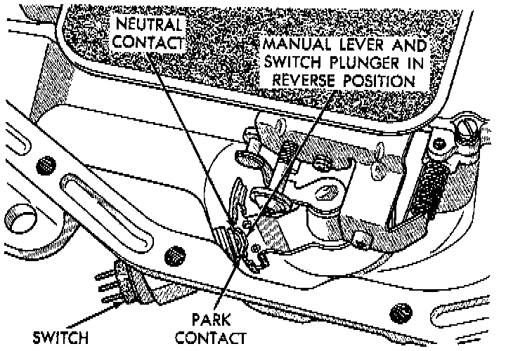

Neutral Safety Switch: Service and Repair

REPLACEMENT
1. Raise vehicle and position drain pan under switch.
2. Disconnect switch wires.
3. Remove switch from case.
4. Move shift lever to Park and Neutral positions. Verify that switch operating lever fingers are centered in switch opening in case.
5. Install new seal on switch and install switch in case. Tighten switch to 34 Nm (25 ft. lbs.) torque.
6. Test continuity of new switch with 12V test lamp.
7. Connect switch wires and lower vehicle.
8. Top off transmission fluid.